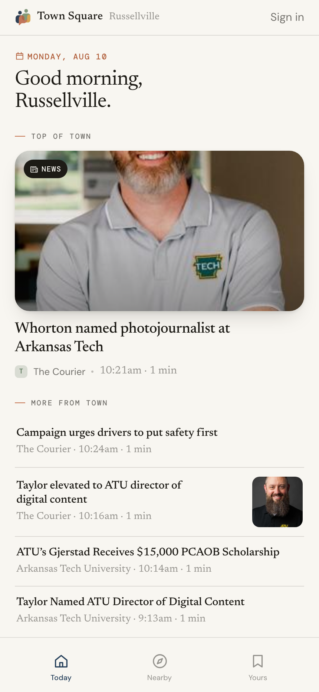
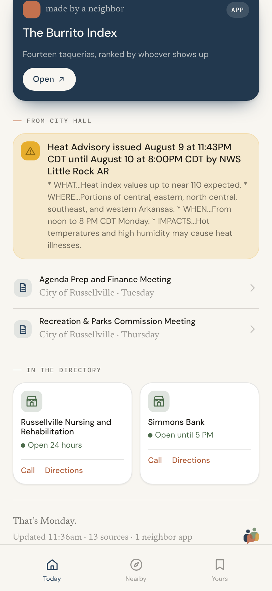
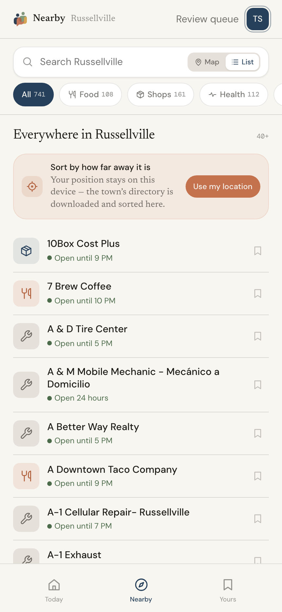
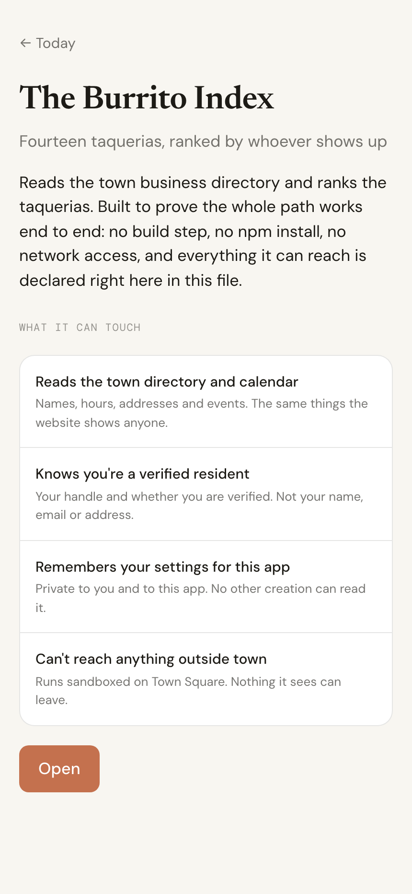

A town square the town actually owns, built so anyone who
lives here can add to it.
For ATU Computing Sciences capstone faculty · August 2026
What it is
A place built for the life of this town
It brings what is already happening into view, gives people a
way to add what they know, and makes room for anyone to build what the town
needs next.

TODAY’S LOCAL NEWS

NOTICES AND MEETINGS

741 LOCAL BUSINESSES

A NEIGHBOR’S APP
Open it, and you
find a town already in motion.
TOWN SQUARE
August 6, 2026 · Co-Create Innovation Hub
Why it exists
A dozen community members were asked to name a problem
technology might solve. Before Town Square came up, people named:
“People are not involved.”
“People do not know what is happening.”
“It costs money just to send an email.”
ATU documented the same needs before we walked in, summarizing
the AR-NETWORK needs-finding workshop: improved access to information, stronger
communication about available services, transportation coordination, resource
mapping, data collection.
TOWN SQUARE
Here is what we have
The platform is built and running today
Live now
Identity and vouching
Residents are verified by neighbors vouching for neighbors. We store
that someone is verified and never store where they live.
Live now
The directory and the record
The town's businesses, places, events, and notices, gathered and
maintained, with real data in it on day one.
Live now
Sandbox, SDK, review queue
A place to build a creation, a stable interface to build it against,
and a review gate every submission passes before it goes live.
A capstone team does not start
with a blank repository. Hosting, auth, design system, data, and deployment
already exist.
TOWN SQUARE
Where a capstone team fits
Students build creations. They never touch core.
Isolation
A stalled team blocks nobody
Every student project is a sandboxed creation on top of the platform,
so it cannot slow down core or another team.
Accountability
The review queue is the gate
Submission runs through the same review every resident builder passes.
Did their exact version pass, yes or no.
After April
Nothing is orphaned
Your guide is explicit that students and faculty own nothing after the
course. We already own the hosting, maintenance, and security, so the
work keeps running.
Teams spend two semesters on
their actual problem instead of spending the fall building scaffolding.
TOWN SQUARE
Where we would like to start
Four projects, four different documented needs
Civic Meeting Tracker
What the council actually decided, in plain English, every
meeting. Answers access to information.
Community Services Board
Every local service and volunteer need in one place, free
to post. Answers communication about available services.
Community Discovery Engine
Helping a resident find the thing they did not know to
look for. Answers resource mapping and data collection.
Civic Information Harm Study
Measuring what the loss of a shared local information
channel has actually cost Russellville. Evidence, not software, and
a natural fit for sociology.
TOWN SQUARE
The ask
Put a capstone team on one of these.
Projects are selected late August to early September, partners
contacted by mid-September, teams work September to April. We are submitting
through the Project Idea Form, and we would rather talk it through with you
first.